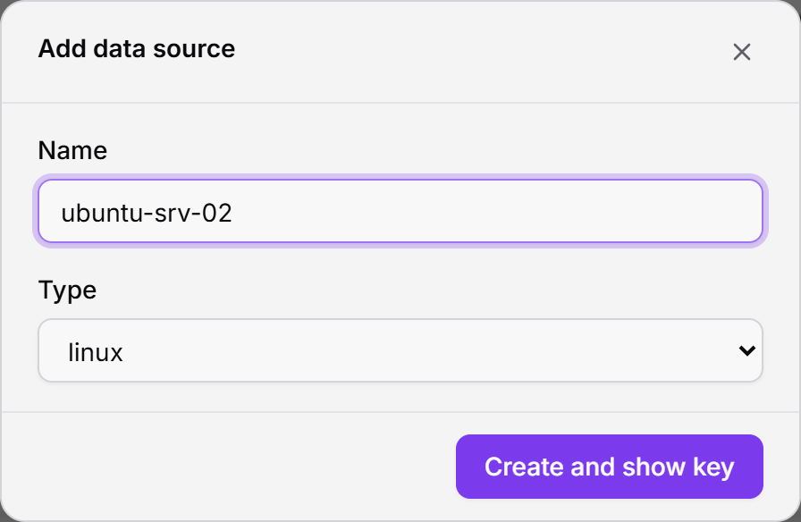
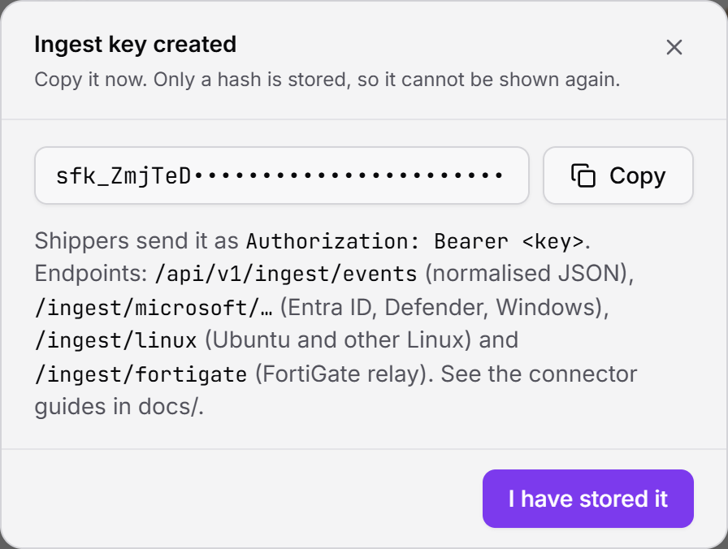
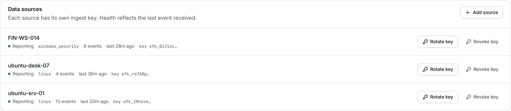
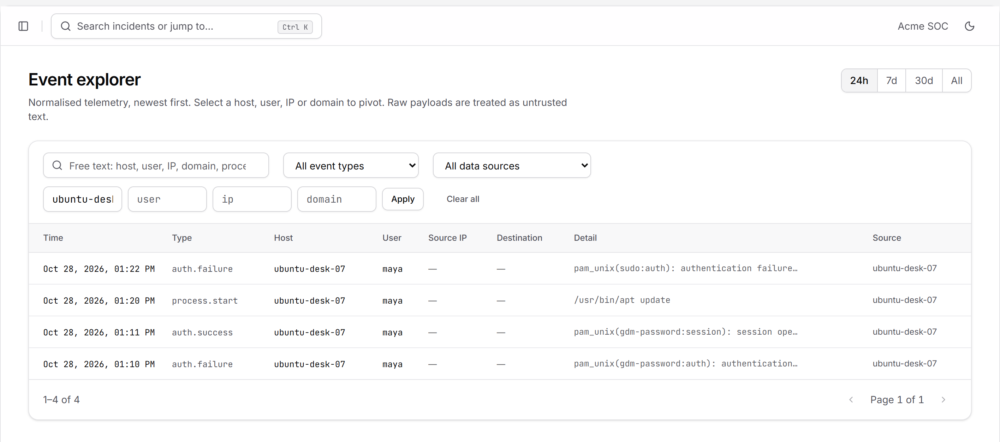
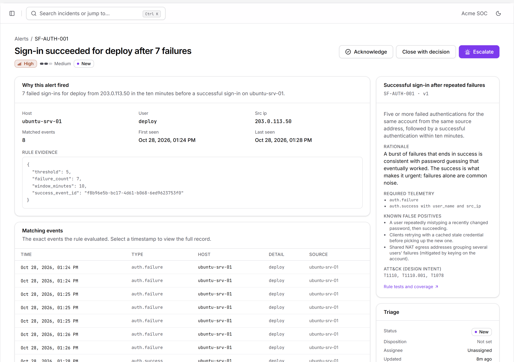
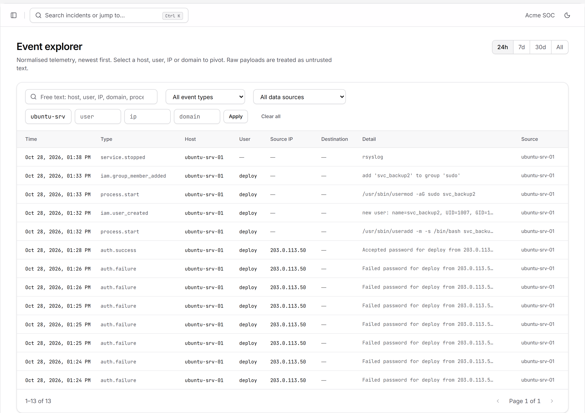
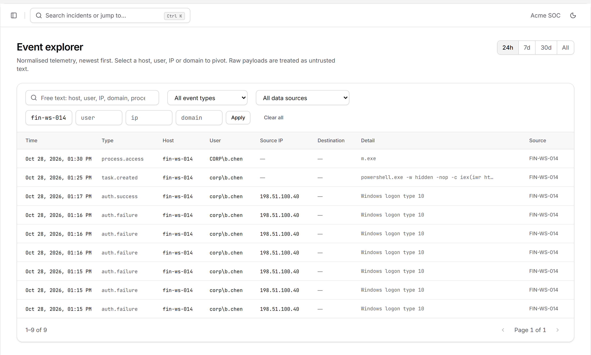
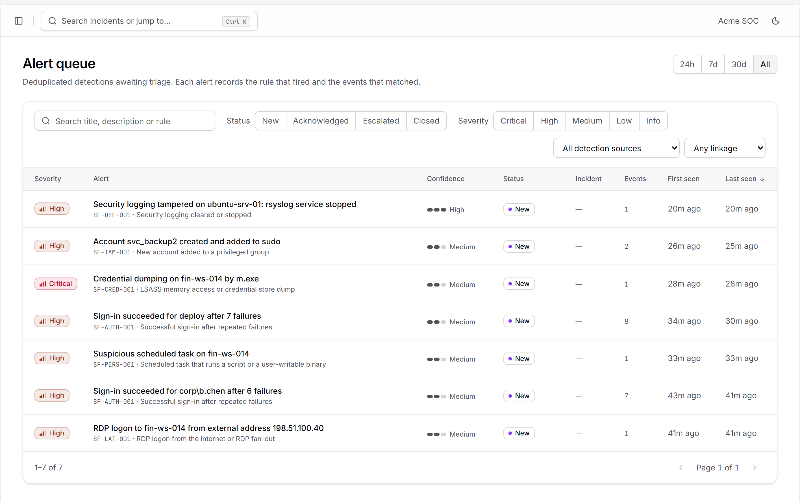

How to connect Ubuntu Desktop, Ubuntu Server and Windows machines to SentinelForge IR so their sign-ins, admin activity and security events are collected and checked by the detections.
A small shipper runs on each machine every five minutes. It reads the machine's own security logs since its last run and posts them over HTTPS to SentinelForge with that machine's ingest key. Nothing listens on the machine and no inbound port is opened.
sentinelforge-api.kuinkel.com. Events are normalised and the detection rules run immediately.| Machine | Collected | Detections that use it |
|---|---|---|
| Ubuntu Desktop | Greeter (GDM/LightDM) and console sign-ins and failures, sudo commands and failed sudo/su passwords, account and group changes | SF-IAM-001 new privileged account; investigations |
| Ubuntu Server | SSH logins and failures with source IP, sudo commands, useradd/usermod/gpasswd, auditd/rsyslog/journald stopping | SF-AUTH-001 password guessing, SF-IAM-001, SF-DEF-001 logging stopped |
| Windows | Logons (with logon type), process creation, scheduled task creation, account and group changes, log clearing, services stopping; with Sysmon also LSASS access, Run-key writes, network and DNS | SF-AUTH-001, SF-PROC-001, SF-IAM-001, SF-DEF-001, SF-CRED-001, SF-PERS-001/002, SF-LAT-001 |
sudo on Ubuntu, a local Administrator on Windows.sentinelforge-api.kuinkel.com. Check with curl -sI https://sentinelforge-api.kuinkel.com/api/v1/health (Ubuntu) or Invoke-RestMethod https://sentinelforge-api.kuinkel.com/api/v1/health (Windows).connectors/linux/ (two files) and connectors/windows/Send-WindowsEvents.ps1.Create one data source per machine. Each gets its own key, and Settings shows each machine's health separately.
Sign in at https://sentinelforge.kuinkel.com as an admin and open Settings (bottom of the left menu). Scroll to Data sources and click Add source.
Name it after the machine's host name and choose the type:
| Machine | Type |
|---|---|
| Ubuntu Desktop or Server | linux |
| Windows (with or without Sysmon) | windows_security |

Click Create and show key. Copy the key that starts with sfk_ with the Copy button. It is shown once; only a hash is stored. Click I have stored it.

Once a machine sends its first events, its source shows Reporting with an event count and the time of the last event:

Works on Ubuntu Desktop 20.04, 22.04, 24.04 and later (GNOME, and other desktops that use LightDM or SDDM). The installer sets everything up; you need the two files from connectors/linux/ and the ingest key from chapter 2.
Use whichever is easiest:
connectors\linux folder from the repository to the stick, plug it into the Ubuntu desktop, and copy the folder to your home folder as sentinelforge using the Files app.sudo apt install -y openssh-server) and find its address with hostname -I. Then in PowerShell on the Windows PC:scp -r C:\path\to\sentinal-IR\connectors\linux maya@192.168.1.50:~/sentinelforge
Open Terminal: press Ctrl + Alt + T, or open Show Apps and search for “Terminal”.
Run the installer and paste the ingest key when asked. Nothing appears while you paste; that is normal for secret input. Press Enter.
maya@ubuntu-desk-07:~$ cd ~/sentinelforge maya@ubuntu-desk-07:~/sentinelforge$ sudo bash install.sh --api-url https://sentinelforge-api.kuinkel.com [sudo] password for maya: Ingest key for this host's data source (sfk_...): Running a first collection... 2026-10-28T13:40:02Z read 1184 journal records, sent 9, 9 new events, 0 alerts raised sentinelforge-shipper.service: Deactivated successfully. Finished sentinelforge-shipper.service - Ship security events from the journal to SentinelForge IR. Installed. Events are sent every 5 minutes. Check: systemctl list-timers sentinelforge-shipper.timer
Illustration of the expected output. “sent 9” means 9 of the journal records were security events SentinelForge uses.
| Item | Purpose |
|---|---|
sentinelforge system account | Runs the shipper. No password, no shell, no home, no sudo; member of systemd-journal only, so it can read logs and nothing else. |
/opt/sentinelforge/ | The shipper script. |
/etc/sentinelforge/linux-shipper.env | API URL and ingest key, readable only by root and the shipper account. |
sentinelforge-shipper.service and .timer | Runs every 5 minutes (and 2 minutes after boot), with systemd hardening. |
/var/lib/sentinelforge/journal.cursor | Where it got to in the log, so nothing is sent twice or skipped. |
Lock the screen (Super + L), type a wrong password once, then sign in properly. After the next run (up to 5 minutes) both appear in SentinelForge. Locally:
maya@ubuntu-desk-07:~$ systemctl list-timers sentinelforge-shipper.timer NEXT LEFT LAST PASSED UNIT ACTIVATES Tue 2026-10-28 13:50:31 UTC 3min 4s Tue 2026-10-28 13:45:31 UTC 1min ago sentinelforge-shipper.timer sentinelforge-shipper.service maya@ubuntu-desk-07:~$ journalctl -u sentinelforge-shipper.service -n 1 -o cat --grep read 2026-10-28T13:45:33Z read 214 journal records, sent 2, 2 new events, 0 alerts raised
Illustration of the expected output.

ubuntu-desk-07: a failed and a successful desktop sign-in, a sudo apt update, and a failed sudo password.Works on Ubuntu Server 20.04 and later, including cloud images. The steps are the same as for the desktop, done over SSH.
From the Windows PC that has the repository (PowerShell), copy the folder, then sign in to the server:
scp -r C:\path\to\sentinal-IR\connectors\linux deploy@203.0.113.10:~/sentinelforge ssh deploy@203.0.113.10
Using PuTTY or WinSCP instead works the same way: copy the two files into ~/sentinelforge and open a session.
Standard installs keep it in /var/log/journal. Minimal and some cloud images keep it only in memory, so events from before a reboot would be lost:
ls -d /var/log/journal || { sudo mkdir -p /var/log/journal && sudo systemctl restart systemd-journald; }
deploy@ubuntu-srv-01:~$ cd ~/sentinelforge && ls install.sh sentinelforge_linux_shipper.py deploy@ubuntu-srv-01:~/sentinelforge$ sudo bash install.sh --api-url https://sentinelforge-api.kuinkel.com Ingest key for this host's data source (sfk_...): Running a first collection... 2026-10-28T13:41:10Z read 3907 journal records, sent 13, 13 new events, 3 alerts raised sentinelforge-shipper.service: Deactivated successfully. Finished sentinelforge-shipper.service - Ship security events from the journal to SentinelForge IR. Installed. Events are sent every 5 minutes. Check: systemctl list-timers sentinelforge-shipper.timer
Illustration of the expected output.
To see exactly what would be sent without sending anything (useful on a new server):
sudo -u sentinelforge python3 /opt/sentinelforge/sentinelforge_linux_shipper.py --dry-run --lookback-minutes 30
From another computer, try a wrong password 6 times for a real account, then sign in correctly from the same computer:
ssh deploy@203.0.113.10 # enter a wrong password 6 times, then the right one
Within 5 minutes an SF-AUTH-001 alert appears. It shows the failures, the successful login and the source address:

deploy from one address, then a successful one.PasswordAuthentication no, recommended), failed attempts are still recorded but this rule cannot fire because nobody can log in with a guessed password.
ubuntu-srv-01: SSH failures and the successful login, a new account svc_backup2 created and added to sudo with the sudo commands that did it, and rsyslog stopping.| On the server | Shows up as |
|---|---|
SSH Failed password / Accepted password / publickey | auth.failure / auth.success with the client address |
sudo command | process.start with the full command line, parent sudo |
useradd, usermod -aG, gpasswd -a, adduser USER GROUP | iam.user_created, iam.group_member_added; the sudo user who ran it is the actor |
auditd, rsyslog, journald, Wazuh, osquery, ufw, AppArmor, fail2ban, ClamAV stopped | service.stopped (ignored during shutdown and reboot) |
sudo, file access and network connections are not in the journal. They need auditd or an EDR agent, which this connector does not read yet.Works on Windows 10, Windows 11 and Windows Server 2016 or later. A PowerShell script runs every 5 minutes as a scheduled task. Do these steps in PowerShell as Administrator: open Start, type “PowerShell”, right-click Windows PowerShell → Run as administrator.
On a domain, set these in a Group Policy for the machines (Computer Configuration → Policies → Windows Settings → Security Settings → Advanced Audit Policy Configuration). On a single machine:
auditpol /set /subcategory:"Logon" /success:enable /failure:enable auditpol /set /subcategory:"Process Creation" /success:enable auditpol /set /subcategory:"User Account Management" /success:enable /failure:enable auditpol /set /subcategory:"Security Group Management" /success:enable auditpol /set /subcategory:"Other Object Access Events" /success:enable reg add "HKLM\Software\Microsoft\Windows\CurrentVersion\Policies\System\Audit" /v ProcessCreationIncludeCmdLine_Enabled /t REG_DWORD /d 1 /f
“Other Object Access Events” records scheduled tasks being created (event 4698). The last line adds command lines to process events.
Copy connectors\windows\Send-WindowsEvents.ps1 to C:\SentinelForge\ on the machine.
Store the ingest key (type windows_security, chapter 2) at machine level, so it never appears in the task's command line:
[Environment]::SetEnvironmentVariable("SENTINELFORGE_INGEST_KEY", "sfk_paste_your_key_here", "Machine")Open a new Administrator PowerShell window (so it sees the key) and run the shipper once:
PS C:\WINDOWS\system32> powershell -NoProfile -ExecutionPolicy Bypass -File C:\SentinelForge\Send-WindowsEvents.ps1 -ApiUrl https://sentinelforge-api.kuinkel.com
2026-10-28 13:42:15Z sent 214 events, 214 new, 2 alerts raisedIllustration of the expected output. The first run reads the last 60 minutes.
Schedule it every 5 minutes as SYSTEM:
$action = New-ScheduledTaskAction -Execute "powershell.exe" -Argument '-NoProfile -ExecutionPolicy Bypass -File "C:\SentinelForge\Send-WindowsEvents.ps1" -ApiUrl https://sentinelforge-api.kuinkel.com' $trigger = New-ScheduledTaskTrigger -Once -At (Get-Date) -RepetitionInterval (New-TimeSpan -Minutes 5) Register-ScheduledTask -TaskName "SentinelForge event shipper" -Action $action -Trigger $trigger -User "SYSTEM" -RunLevel Highest
Check it in Task Scheduler → Task Scheduler Library → SentinelForge event shipper: “Last Run Result” should be The operation completed successfully (0x0).

fin-ws-014: repeated RDP logon failures, a successful RDP logon from an external address, a scheduled task created, and an LSASS memory read seen by Sysmon.| Log | Event IDs | Meaning |
|---|---|---|
| Security | 4624, 4625 | Logon success / failure, with the logon type (10 = Remote Desktop) |
| Security | 4688, 4698 | Process created (with command line); scheduled task created |
| Security | 4720, 4728, 4732, 4756 | Account created; added to a global / local / universal group |
| Security, System | 1102, 104, 7036 | Log cleared; service stopped (Event Log, Sysmon, Defender) |
| Sysmon | 1, 3, 10, 13, 22 | Process, network connection, LSASS access, Run-key write, DNS query |
After a machine's first run, check three places in SentinelForge.

Open an alert to see why it fired, the matching events and the rule's known false positives, then acknowledge, close with a decision, or escalate it to an incident.
| Task | Ubuntu | Windows |
|---|---|---|
| Run now | sudo systemctl start sentinelforge-shipper.service | Task Scheduler → right-click the task → Run |
| See the last runs | journalctl -u sentinelforge-shipper.service -n 20 | Task Scheduler → History tab |
| Rotate the key | Settings → Rotate key, then sudoedit /etc/sentinelforge/linux-shipper.env | Settings → Rotate key, then set SENTINELFORGE_INGEST_KEY again (5.2 step 2) |
| Re-send recent history | sudo rm /var/lib/sentinelforge/journal.cursor | Delete C:\ProgramData\SentinelForge\windows-events.state |
| Uninstall | sudo bash install.sh --uninstall | Unregister-ScheduledTask "SentinelForge event shipper", delete C:\SentinelForge, and clear the key: [Environment]::SetEnvironmentVariable("SENTINELFORGE_INGEST_KEY", $null, "Machine") |
Re-sending is safe: SentinelForge ignores events it already has. If the API cannot be reached, the shippers keep their place and catch up on the next run.
| Symptom | Cause and fix |
|---|---|
HTTP 401: Missing or invalid ingest key | Wrong, rotated or revoked key. Copy a new one (Rotate key) and update the machine. |
HTTP 429 / “Too many requests” | Rate limit per source (60 requests a minute). The shipper retries; persistent 429s mean several machines share one key: give each its own. |
API unreachable / timeout | Outbound HTTPS is blocked. Allow TCP 443 to sentinelforge-api.kuinkel.com; check a proxy. |
Ubuntu: journalctl failed | The account cannot read the journal. Re-run the installer, which adds sentinelforge to systemd-journal. |
| Ubuntu: runs fine but “sent 0” | No security events since the last run; normal on a quiet machine. Use --dry-run --lookback-minutes 600 to see recent candidates. |
| Windows: “Set SENTINELFORGE_INGEST_KEY…” | The key was set in a window opened earlier, or for the user instead of the machine. Set it with "Machine" and open a new window. |
| Windows: no process command lines | The registry setting in 5.1 is missing; apply it and wait for new processes. |
| Windows: no scheduled-task or LSASS events | “Other Object Access Events” auditing is off, or Sysmon is not installed / not configured for events 10 and 13. |
| Source stays Stale | Check the last run on the machine first; any HTTP error message names the problem. |